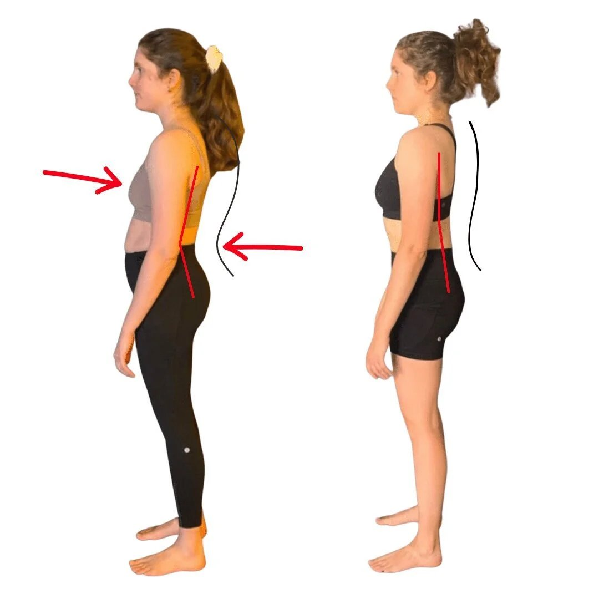

Neck pain is disruptive to sleep, concentration, movement and quality of life.
Unfortunately, many people suffer from chronic neck and shoulder pain and cannot find a solution.
If you have tried:
-
neck pain exercises
-
voltaren for neck pain
-
physio for neck and shoulder pain
-
heat pack for neck and shoulder pain
-
tens unit for neck pain
-
neck brace for neck pain
-
or chiropractor for neck pain
It is time to try Functional Patterns. As a method, we have successfully reduced or removed neck pain in thousands of desperate clients.

What is Functional Patterns?
Functional patterns is a system that uses movement analysis and movement optimisation to treat poor posture and chronic pain. Our system reduces inflammation, improves coordination and builds muscle, all while eliminated years of stiffness and discomfort.
If you're searching for how to cure neck pain fast, read this first.
What Causes Neck Pain?
A variety of reasons cause neck pain. The most common cause we see in our clinic is neck instability. A weak and disconnected neck results in excessive tightness, chronic neck pain and reduced ranges of motion. This is a protective mechanism.
Other causes of neck pain stem from other areas of the body. A weak core and 'front line' in general means the neck lacks integration and support. This will often cause poor neck and head posture as well as pain.
Poor spinal health and movement can pull the neck into a compromised position. If your spine compressed downwards, your neck will pull backwards and range of motion will be limited. This can also effect the use and appearance of your jaw.
If you look at the client pictured, you can see various asymmetries in her spine. These asymmetries are caused by unbalanced movement patterns and excessive compression. Addressing the clients movement and compression solved the neck pain. Do you think this client would have achieved the same result with passive stretching or adjustments?

Can bursitis in shoulder cause neck pain?
We often see shoulder and neck problems appearing together. Can shoulder bursitis cause neck pain?
The answer is yes and no.
Yes, it is highly likely that your neck pain and shoulder bursitis are correlated. No, your shoulder bursitis likely did not 'cause' you neck pain.
Rather, your neck pain and shoulder bursitis likely stem from the same root cause. The way your spine moves is a major factor in the health of both your shoulders and neck.
If your spine does not bend or rotate correctly, your shoulder and neck will both suffer. The tracking, alignment and integration will all be misaligned.
Many people experience shoulder joint pain during bench press. In fact 'shoulder pain in chest press' is a commonly searched term on Google.
Bench pressing is a great example of using your spine and shoulders/neck in an unintegrated way. This is why bench press causes so many shoulder injuries.
If you look at the way someone like Usain Bolt runs, you'll see that his movement looks nothing like a chess press. He uses his chest muscles, spine, shoulders and neck in an integrated way.
Connecting your upper and lower body systems is the best way to address neck and shoulder issues quickly and effectively. Functional Patterns develops tailor made movements for each client based on the results of their gait (walking or running) analysis.
Here is an example of a functional patterns exercise using the chest, core, neck and shoulders in integration to prevent neck pain in a client.

exercise for neck and head pain
So, what are the best exercises for neck, shoulder and head pain?
The truth is, everybody has different movement patterns that need correcting. Your neck may hurt because you move your neck too much during the movement, while someone elses neck may not move at all. You may have a very weak lower core while someone elses upper core may be the culprit.
TO add to this, each person has MANY different factors that cause their neck and shoulder pain. This is why fixing the issue can take decades for some people.
Functional Patterns assesses each clients gait and posture individually to see what they specifically need. Until you are aware of how you are moving and what your movement patterns are, you cannot successfully improve them.
A successful treatment plan for neck and shoulder pain requires the correct analysis. Whether you have had:
-
car accidents,
-
sports injury,
-
a pinched nerve
-
or muscle strain,
you won't know why your neck hurts until you have your gait (walking/running) assessed.
You can attend chiro or physiotherapy for shoulder pain multiple times per week. However, if you do not address and resolve the main issue, the pain will likely return.
Pain in the neck is always related to issues that span across the entire body. It is important to find a chronic pain practitioner who doesn't simply focus on 'what hurts.'
This is because you are never just "moving your head." Your body is an intricately connected system that involves so much more than just your neck.
What Causes Herniated Discs
Herniated discs can occur anywhere on the back. Some people experience disc herniations in their upper back or neck region.
What causes these?
While there are many causes, we commonly see disc herniation as a result of poor movement patterns.
Muscle imbalances and poor core stability are common drivers. Muscle imbalances lead to weakness, compression and asymmetric loading in the neck. Poor core stability leads to excessive pressure being applied on the neck alongside potential forward head posture.
If we look at the client pictured here. Which spinal position is more likely to result in a herneated disc? It is not gthr positition that is the driver, but the movement patterns that have encourages that position.
In the case of this client, poor core and glute activation, as well as uneven rotations during movement, caused this posture. Therefore, those factors increase the chance of cervical or neck herniation.

What Should You Do Right Now About Your Neck Pain?
OPTION 1
Book in with a Functional Patterns Practitioner. You can search online for a Functional Patterns Certified Practitioner in your area. If you live near Brisbane, you can come and see our team. You will undergo a 90 minute initial assessment and training session.
The assessment will consist of gait analysis (running/walking), posture analysis as well as diet and lifestyle analysis.
You will leave the session with a deep understanding of why you have been experiences neck and potentially other chronic pains and concerns.
You will leave feeling empowered, and most importantly, you will leave with a plan moving forward.
Option 2
The main American Functional Patterns Company has a 10 week online course. It has helped thousands of people to get out of pain in the comfort of their own home. It is reasonably affordable and a fantastic way to begin your journey to saying goodbye to neck pain permanently.